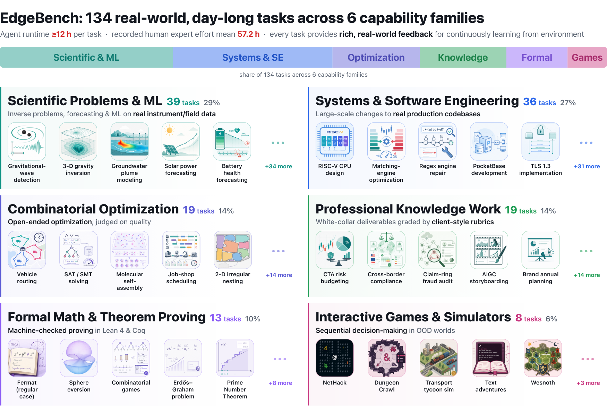

Includes a formal-math task family where agents fill proof obligations in Lean 4 projects such as the Carleson and FLT-regular formalizations.
Abstract
Pretraining scaling laws reveal that model capability improves predictably with data and compute. But learning from real world environments after deployment remains far less understood. Analyzing roughly 38,000 hours of agent interaction with the environment across 134 real world tasks, we find, to the best of our knowledge, the first evidence that overall performance during environment learning follows a log-sigmoid scaling law with remarkably high precision, reaching R^2 = 0.998. Across model generations, we also find that agent learning speed roughly doubles every three months. This discovery stems from EdgeBench, a suite of 134 real world tasks with ultra-long horizons, spanning scientific discovery, software engineering, combinatorial optimization, professional knowledge work, formal mathematics, and interactive games. Each task sustains at least 12 hours of continuous agent operation under rich, multilevel feedback, and is built through substantial expert effort. We publicly release 51 tasks and our full evaluation framework to accelerate the study of how agents learn from real world experience.
Problem
Pretraining scaling laws are well studied, but it is unclear whether agents learning from real-world environments after deployment improve in a predictable way. Existing benchmarks give little feedback or allow only short horizons, so they cannot measure within-run learning.
Approach
EdgeBench is a suite of 134 ultra-long-horizon tasks across six families: scientific discovery, software engineering, combinatorial optimization, professional work, formal mathematics, and games. Each task supports at least 12 hours of agent operation with multilevel feedback. The formal-math tasks require completing proof obligations in Lean 4 projects, including real/functional analysis, Carleson's theorem, and Fermat's Last Theorem for regular primes, with transitive dependency checking. Five frontier models were run in three 12-hour trials per task, and the resulting performance trajectories were fitted with several functional forms.

Figure 2 : EdgeBench task taxonomy. 134 real world tasks across six capability families, with feedback channels designed to support within-run improvement. Recorded human expert effort estimates: mean 57.2 h.
Results
Over roughly 38,000 hours of interaction, aggregate performance follows a log-sigmoid curve in interaction time with R^2 = 0.998. Agent learning speed roughly doubles every three months across model generations. Claude Opus 4.8 leads at 12 hours with 51.3, followed by GPT-5.5 at 48.4; 51 tasks are publicly released.
Functional form
RMSE
Log-Sigmoid
0.390
Log-Probit
0.398
Log-Gompertz
0.402
Weibull CDF
0.404
Log-Linear
0.717
Fit quality of functional forms for environment-learning curves